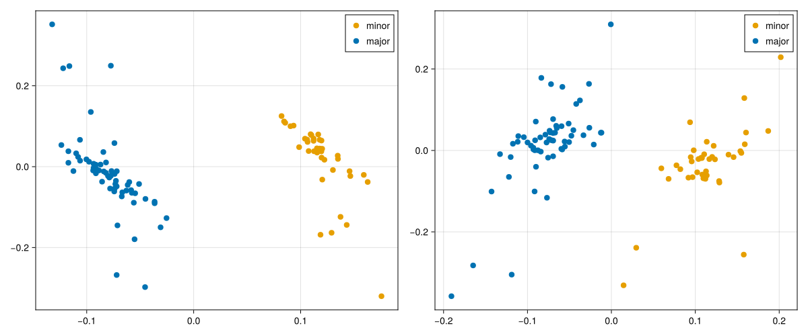
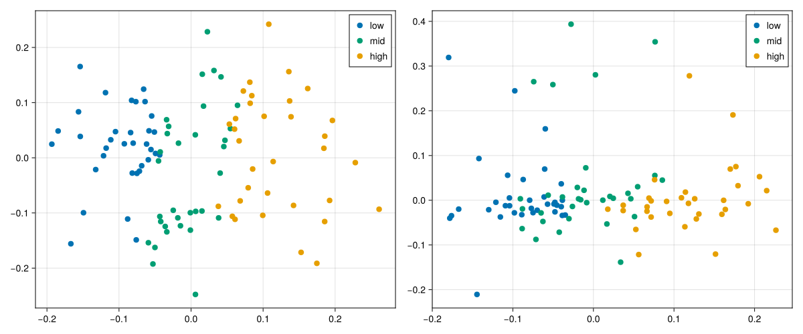
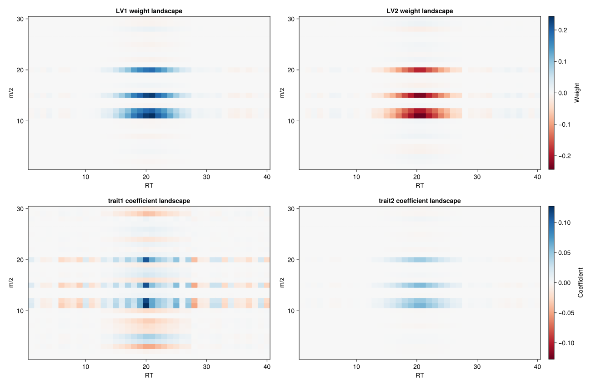
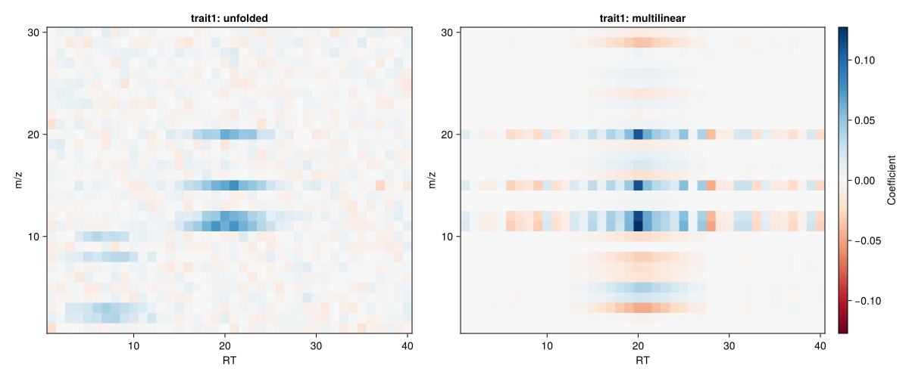
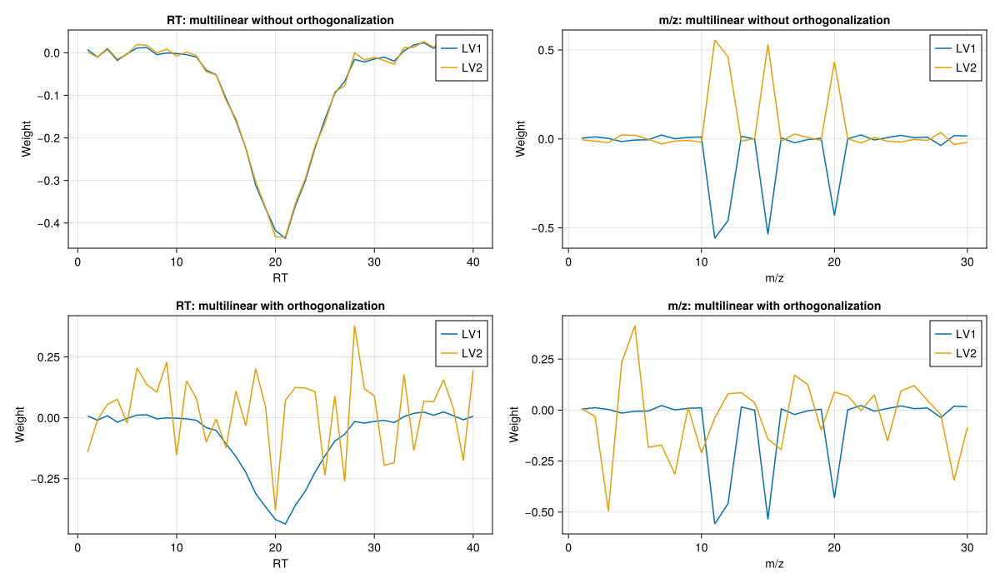

Fit
Model fitting in NCPLS is performed through StatsAPI.fit together with an NCPLSModel. As in CPPLS, the same fit entry point is used for regression and discriminant analysis. The NCPLS-specific modeling choice is how the predictor-side loading weights are represented:
multilinear=falsekeeps the predictor-side weight tensor in unfolded form,multilinear=truecompresses each component to a rank-1 multilinear weight tensor,orthogonalize_mode_weights=trueoptionally orthogonalizes the multilinear mode vectors across components.
The practical motivation for obs_weights and Yadd is the same as in the matrix-valued CPPLS workflow, so that discussion is not repeated in full here. See the corresponding CPPLS pages for the general rationale and longer examples: Fit and Fit Examples. In NCPLS, these same options act together with the additional multilinear predictor-side compression described on the Theory page.
Response Conventions
The interpretation of the third positional argument is determined by its type:
1. fit(m, X, y::AbstractVector{<:Real}) fits univariate regression.
2. fit(m, X, Y::AbstractMatrix{<:Real}) fits a user-defined response block.
3. fit(m, X, labels::AbstractCategoricalArray) fits discriminant analysis by converting the labels internally to a one-hot response matrix.
This means that a custom response matrix may contain:
- only continuous columns,
- only one-hot class-indicator columns,
- or a hybrid block such as
[class indicators | continuous traits].
For hybrid response matrices, class-related downstream helpers need sampleclasses and responselabels so the class block can be inferred correctly. The actual decoding of those mixed predictions is discussed on Projection and Prediction.
Multilinear Versus Unfolded
NCPLSModel controls whether the predictor-side loading weights are kept in unfolded form or approximated by one rank-1 outer product per component.
multilinear=true is the default, because NCPLS is primarily meant for genuinely multiway predictors. In that setting, the multilinear branch is usually the most natural starting point: it returns one weight vector per predictor mode and can be inspected with weightprofiles.
multilinear=false is mainly useful for comparison and sensitivity analysis. It lets you fit the same response model without the rank-1 multilinear compression, so you can ask whether the multilinear structure is helping or whether it is too restrictive for the current dataset. It also gives an unfolded NCPLS variant that is methodologically easier to compare with matrix-based CPPLS analyses. Because the NCPLS implementation extracts components without explicit predictor deflation, this unfolded branch may also be computationally attractive in some settings, but that should be treated as a practical possibility rather than a benchmarked package claim.
The additional switch orthogonalize_mode_weights=true is only relevant when multilinear=true. It makes the stored mode vectors orthogonal within each predictor mode across components. This can make multilinear weight profiles easier to compare, but it is also a stricter model assumption and is therefore not the default.
Example Data
The synthetic dataset used below supports all three fitting styles: discriminant analysis, regression, and hybrid response modeling.
using NCPLS
using Statistics
using CairoMakie
data = synthetic_multilinear_hybrid_data(
nmajor=60,
nminor=40,
mode_dims=(40, 30),
orthogonal_truth=true,
integer_counts=false,
)
model_multilinear = NCPLSModel(
ncomponents=2,
multilinear=true,
orthogonalize_mode_weights=false,
)
model_unfolded = NCPLSModel(
ncomponents=2,
multilinear=false,
)
model_multilinear_orth = NCPLSModel(
ncomponents=2,
multilinear=true,
orthogonalize_mode_weights=true,
)
blue, orange, green = Makie.wong_colors()[[1, 2, 3]]
trait1 = data.Yprim_reg[:, 1]
q1, q2 = quantile(trait1, [1/3, 2/3])
trait_bins = categorical(ifelse.(trait1 .<= q1, "low",
ifelse.(trait1 .<= q2, "mid", "high")))Discriminant Analysis
Passing a categorical vector triggers the discriminant-analysis convenience path.
mf_da_unfolded = fit(
model_unfolded,
data.X,
categorical(data.sampleclasses);
Yadd=data.Yadd,
obs_weights=data.obs_weights,
samplelabels=data.samplelabels,
predictoraxes=data.predictoraxes,
)
mf_da = fit(
model_multilinear,
data.X,
categorical(data.sampleclasses);
Yadd=data.Yadd,
obs_weights=data.obs_weights,
samplelabels=data.samplelabels,
predictoraxes=data.predictoraxes,
)fig_da = Figure(size=(1200, 500))
scoreplot(
mf_da_unfolded;
backend=:makie,
figure=fig_da,
axis=Axis(fig_da[1, 1]),
title="DA scores: unfolded",
group_order=["minor", "major"],
default_marker=(; markersize=12),
group_marker=Dict("minor" => (; color=orange), "major" => (; color=blue)),
show_inspector=false,
)
scoreplot(
mf_da;
backend=:makie,
figure=fig_da,
axis=Axis(fig_da[1, 2]),
title="DA scores: multilinear",
group_order=["minor", "major"],
default_marker=(; markersize=12),
group_marker=Dict("minor" => (; color=orange), "major" => (; color=blue)),
show_inspector=false,
)
save("fit_da_multilinear_vs_unfolded.svg", fig_da)
Regression
For regression, pass a numeric vector or matrix directly. Here the synthetic dataset provides two continuous target columns in data.Yprim_reg.
mf_reg_unfolded = fit(
model_unfolded,
data.X,
data.Yprim_reg;
Yadd=data.Yadd,
obs_weights=data.obs_weights,
responselabels=data.responselabels_reg,
samplelabels=data.samplelabels,
predictoraxes=data.predictoraxes,
)
mf_reg = fit(
model_multilinear,
data.X,
data.Yprim_reg;
Yadd=data.Yadd,
obs_weights=data.obs_weights,
responselabels=data.responselabels_reg,
samplelabels=data.samplelabels,
predictoraxes=data.predictoraxes,
)fig_reg = Figure(size=(1200, 500))
scoreplot(
data.samplelabels,
trait_bins,
xscores(mf_reg_unfolded, 1:2);
backend=:makie,
figure=fig_reg,
axis=Axis(fig_reg[1, 1]),
title="Regression scores: unfolded",
group_order=["low", "mid", "high"],
default_marker=(; markersize=12),
group_marker=Dict("low" => (; color=blue), "mid" => (; color=green), "high" => (; color=orange)),
show_inspector=false,
)
scoreplot(
data.samplelabels,
trait_bins,
xscores(mf_reg, 1:2);
backend=:makie,
figure=fig_reg,
axis=Axis(fig_reg[1, 2]),
title="Regression scores: multilinear",
group_order=["low", "mid", "high"],
default_marker=(; markersize=12),
group_marker=Dict("low" => (; color=blue), "mid" => (; color=green), "high" => (; color=orange)),
show_inspector=false,
)
save("fit_reg_multilinear_vs_unfolded.svg", fig_reg)
NCPLS-Specific Predictor Surfaces
The score plots above summarize how samples are arranged in latent space, but NCPLS also stores model objects that still live on the predictor axes themselves. For a genuinely two-mode predictor such as this synthetic RT-by-m/z example, two fitted-model views are especially helpful:
weightlandscape(mf; lv=k)shows the component-specific predictor-side weight surface,coefficientlandscape(mf; response=j)shows the final cumulative regression surface for one response.
The first tells us which predictor regions drive a latent component. The second tells us how the final fitted model maps the predictor surface to one chosen response variable.
rt_axis, mz_axis = predictoraxes(mf_reg)
W_lv1 = weightlandscape(mf_reg; lv=1)
W_lv2 = weightlandscape(mf_reg; lv=2)
B_trait1 = coefficientlandscape(mf_reg; response=1)
B_trait2 = coefficientlandscape(mf_reg; response=2)
weight_lim = maximum(abs.(vcat(vec(W_lv1), vec(W_lv2))))
coef_lim = maximum(abs.(vcat(vec(B_trait1), vec(B_trait2))))
fig_landscapes = Figure(size=(1300, 850))
ax_w1 = Axis(
fig_landscapes[1, 1],
title="LV1 weight landscape",
xlabel=rt_axis.name,
ylabel=mz_axis.name,
)
heatmap!(
ax_w1,
rt_axis.values,
mz_axis.values,
W_lv1;
colormap=:RdBu,
colorrange=(-weight_lim, weight_lim),
)
ax_w2 = Axis(
fig_landscapes[1, 2],
title="LV2 weight landscape",
xlabel=rt_axis.name,
ylabel=mz_axis.name,
)
heatmap!(
ax_w2,
rt_axis.values,
mz_axis.values,
W_lv2;
colormap=:RdBu,
colorrange=(-weight_lim, weight_lim),
)
ax_b1 = Axis(
fig_landscapes[2, 1],
title="$(data.responselabels_reg[1]) coefficient landscape",
xlabel=rt_axis.name,
ylabel=mz_axis.name,
)
heatmap!(
ax_b1,
rt_axis.values,
mz_axis.values,
B_trait1;
colormap=:RdBu,
colorrange=(-coef_lim, coef_lim),
)
ax_b2 = Axis(
fig_landscapes[2, 2],
title="$(data.responselabels_reg[2]) coefficient landscape",
xlabel=rt_axis.name,
ylabel=mz_axis.name,
)
heatmap!(
ax_b2,
rt_axis.values,
mz_axis.values,
B_trait2;
colormap=:RdBu,
colorrange=(-coef_lim, coef_lim),
)
Colorbar(
fig_landscapes[1, 3],
limits=(-weight_lim, weight_lim),
colormap=:RdBu,
label="Weight",
)
Colorbar(
fig_landscapes[2, 3],
limits=(-coef_lim, coef_lim),
colormap=:RdBu,
label="Coefficient",
)
save("fit_predictor_surfaces.svg", fig_landscapes)
This figure helps separate two ideas that are easy to conflate. The weight landscapes in the top row are component objects: they show which RT-by-m/z regions define LV1 and LV2. The coefficient landscapes in the bottom row are response objects: they show how the final fitted model predicts each trait from the predictor surface. Because latent-variable signs are arbitrary, the signed colors in the top row should be read mainly as a pattern of contrasting regions rather than as absolute "positive" or "negative" chemistry.
Switching Between Unfolded and Multilinear Fits
The response handling is unchanged; only the predictor-side representation differs. The two figures above therefore isolate the main practical question behind the multilinear switch: how much of the fitted latent structure changes when the predictor weights are compressed to one rank-1 multilinear term per component.
In practice, this gives three common model specifications:
NCPLSModel(ncomponents=2, multilinear=false)
NCPLSModel(ncomponents=2, multilinear=true, orthogonalize_mode_weights=false)
NCPLSModel(ncomponents=2, multilinear=true, orthogonalize_mode_weights=true)The first keeps fully unfolded predictor-side weights. The second uses multilinear rank-1 compression without additional orthogonality constraints. The third adds orthogonality of the stored mode vectors across components.
One direct way to see the effect of the multilinear switch is to compare the final coefficient landscape for the same response under the unfolded and multilinear fits. The response is unchanged, so any difference in the plotted surface comes from the predictor-side representation rather than from a different supervision target.
B_trait1_unfolded = coefficientlandscape(mf_reg_unfolded; response=1)
B_trait1_multilinear = coefficientlandscape(mf_reg; response=1)
coef_compare_lim = maximum(abs.(vcat(vec(B_trait1_unfolded), vec(B_trait1_multilinear))))
fig_coef_compare = Figure(size=(1200, 500))
ax_b_unfolded = Axis(
fig_coef_compare[1, 1],
title="$(data.responselabels_reg[1]): unfolded",
xlabel=rt_axis.name,
ylabel=mz_axis.name,
)
heatmap!(
ax_b_unfolded,
rt_axis.values,
mz_axis.values,
B_trait1_unfolded;
colormap=:RdBu,
colorrange=(-coef_compare_lim, coef_compare_lim),
)
ax_b_multilinear = Axis(
fig_coef_compare[1, 2],
title="$(data.responselabels_reg[1]): multilinear",
xlabel=rt_axis.name,
ylabel=mz_axis.name,
)
heatmap!(
ax_b_multilinear,
rt_axis.values,
mz_axis.values,
B_trait1_multilinear;
colormap=:RdBu,
colorrange=(-coef_compare_lim, coef_compare_lim),
)
Colorbar(
fig_coef_compare[1, 3],
limits=(-coef_compare_lim, coef_compare_lim),
colormap=:RdBu,
label="Coefficient",
)
save("fit_coefflandscape_multilinear_vs_unfolded.svg", fig_coef_compare)
This comparison makes the tradeoff more concrete. The unfolded branch is free to place coefficient structure anywhere on the full RT-by-m/z surface. The multilinear branch has to build that fitted surface from rank-1 component terms, so the same response can end up with a visibly more constrained coefficient pattern.
mf_reg_multilinear_orth = fit(
model_multilinear_orth,
data.X,
data.Yprim_reg;
Yadd=data.Yadd,
obs_weights=data.obs_weights,
responselabels=data.responselabels_reg,
samplelabels=data.samplelabels,
predictoraxes=data.predictoraxes,
)
profiles_no_orth = [weightprofiles(mf_reg; lv=lv) for lv in 1:2]
profiles_with_orth = [weightprofiles(mf_reg_multilinear_orth; lv=lv) for lv in 1:2]
fig_profiles = Figure(size=(1200, 700))
for (j, axis_meta) in enumerate(data.predictoraxes)
ax_without = Axis(
fig_profiles[1, j],
title="$(axis_meta.name): multilinear without orthogonalization",
xlabel=axis_meta.name,
ylabel="Weight",
)
lines!(ax_without, axis_meta.values, profiles_no_orth[1][j], color=blue, label="LV1")
lines!(ax_without, axis_meta.values, profiles_no_orth[2][j], color=orange, label="LV2")
axislegend(ax_without, position=:rt)
ax_with = Axis(
fig_profiles[2, j],
title="$(axis_meta.name): multilinear with orthogonalization",
xlabel=axis_meta.name,
ylabel="Weight",
)
lines!(ax_with, axis_meta.values, profiles_with_orth[1][j], color=blue, label="LV1")
lines!(ax_with, axis_meta.values, profiles_with_orth[2][j], color=orange, label="LV2")
axislegend(ax_with, position=:rt)
end
save("fit_mode_orthogonalization.svg", fig_profiles)
This last comparison shows the effect of orthogonalize_mode_weights=true on the stored multilinear mode profiles. The latent score space may change only modestly, but the mode-wise weight vectors become easier to compare because each predictor mode is forced to carry orthogonal component profiles.
Hybrid Response Blocks
Hybrid response blocks are fit exactly like any other numeric response matrix. The only additional requirement is that the class-indicator columns must be identifiable from sampleclasses and responselabels.
mf_hybrid = fit(
model_multilinear,
data.X,
data.Yprim_hybrid;
Yadd=data.Yadd,
obs_weights=data.obs_weights,
sampleclasses=data.sampleclasses,
responselabels=data.responselabels_hybrid,
samplelabels=data.samplelabels,
predictoraxes=data.predictoraxes,
)This is usually more useful once predictions are inspected, because the main question is how the class block and continuous block are decoded downstream. For that reason, the worked hybrid usage is better continued on Projection and Prediction.
API
StatsAPI.fit — Function
fit(
m::NCPLSModel,
X::AbstractArray{<:Real},
Yprim;
Yadd::Union{AbstractMatrix{<:Real}, Nothing}=nothing,
obs_weights::Union{AbstractVector{<:Real}, Nothing}=nothing,
samplelabels::AbstractVector=String[],
responselabels::AbstractVector=String[],
sampleclasses::Union{AbstractVector, Nothing}=nothing,
predictoraxes=(),
verbose::Bool=false
) -> NCPLSFitFit a NCPLS model using the StatsAPI entry point and an explicit NCPLSModel. The model specification supplies the number of components, centering and scaling, whether the multilinear loading-weight branch is used, whether mode weights are orthogonalized on previous components, and the PARAFAC control settings multilinear_maxiter, multilinear_tol, multilinear_init, and multilinear_seed, while the call to fit supplies data, optional weights, additional responses, and label metadata.
The interpretation of the third argument Yprim depends on its type. When Yprim is an AbstractMatrix{<:Real}, it is treated as a user-supplied response block and used as-is; it may contain arbitrary combinations of continuous responses, one-hot encoded class indicators, or other custom encodings. When Yprim is an AbstractVector{<:Real}, it is interpreted as a univariate numeric response and internally reshaped to a one-column matrix, corresponding to regression-style fitting. When Yprim is an AbstractCategoricalArray, it is interpreted as a vector of class labels; the labels are converted internally to a one-hot encoded response matrix and class names are inferred as response labels.
Keyword arguments accepted by fit include obs_weights for per-sample weighting and Yadd for additional response columns. Yadd must have the same number of rows as X and is concatenated internally to Yprim to build the supervised projection, while prediction targets always remain the primary responses.
Optional samplelabels, responselabels, sampleclasses, and predictoraxes are stored on the fitted object for downstream plotting and interpretation. When Yprim is a numeric matrix or vector, sampleclasses can be used as grouping metadata. When sampleclasses and responselabels match a one-hot class block in Yprim, the fitted model also enables class-prediction helpers on that block. When class labels are passed positionally as a categorical array, they define the supervised response and are also stored as metadata. For custom response matrices this matching is validated as follows: if none of the unique sampleclasses occur in responselabels, no class block is inferred and the labels remain metadata only; if only some occur, fit throws an error; if all occur, each must appear exactly once and the matched response columns must form a row-wise consistent one-hot block. If verbose=true, iteration progress from the PARAFAC step is printed when m.multilinear is enabled.
The return value is a NCPLSFit containing scores, loadings, regression coefficients, and the metadata needed for downstream prediction and diagnostics. Use NCPLS.fit or StatsAPI.fit when disambiguation is required in your namespace.